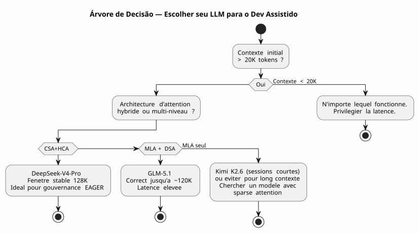

DeepSeek-V4-Pro, Kimi K2.6, GLM-5.1: Três LLMs à prova de Vibe Coding Contexto Longo
Publié le 28 April 2026
- Contexto: não é um banco de ensaio, mas um canteiro de obras
- Meu ambiente de teste
- A Grade de Avaliação
- Rodada 1 : Kimi K2.6 — O Falso Início
- Round 2 : GLM-5.1 — O Combatente Honorável
- Round 3: DeepSeek-V4-Pro — A Máquina de Guerra
- Encontro Face a Face: Métricas Comparativas
- Por que DeepSeek-V4-Pro Ganha em Desenvolvimento de Software
- Lições Aprendidas: Como Escolher seu LLM para o Vibe Coding
- E a Governança Agent em tudo isso?
- Fontes Técnicas
- Conclusão: A Escolha do Artesão
A guerra dos LLMs também se desenrola no terminal de um desenvolvedor. Não em benchmarks acadêmicos estéreis. Na vida real: um prompt de 30 000 tokens, uma governança de agente em AsciiDoc, plugins Gradle Kotlin DSL para depurar e sessões que se encadeiam por três semanas. Testei para você DeepSeek-V4-Pro, Kimi K2.6 e GLM-5.1. Aqui está o veredicto, provas técnicas a respaldar.
- toc
-
[]
Contexto: não é um banco de ensaio, mas um canteiro de obras
Há três semanas, eu estava trabalhando em`codebase-gradle`, meu sistema meta-build que centraliza a configuração YAML de quatro projetos: um gerador de README PlantUML, um construtor de slides AsciiDoc, um site estático JBake e um chatbot LLM. O agente Opencode, governado pela minha metodologia de arquivos de agente em AsciiDoc, carregava ~30K tokens de contexto EAGER a cada início de sessão — regras absolutas, backlog, histórico das últimas 10 sessões.
É neste terreno que eu confrontei três modelos :
-
Kimi K2.6(Moonshot AI, 1T parâmetros / 32B ativados, 256K contexto máximo, MLA) - GLM-5.1(Zhipu AI/Tsinghua, 744B de parâmetros / DSA, contexto máximo de 200K) - DeepSeek-V4-Pro(DeepSeek, 1.6T parâmetros / 49B ativados, 1M contexto máximo, CSA+HCA)
Todos servidos via Ollama em servidor cloud, todos em modo thinking (fase de reflexão ativada). O desafio: produzir código correto, manter a consistência em sessões longas e não alucinar quando o contexto ultrapassar 80K tokens.
Meu ambiente de teste
Failed to generate image: PlantUML preprocessing failed: [From <input> (line 10) ]
@startuml
skinparam backgroundColor #FEFEFE
skinparam defaultTextAlignment center
skinparam wrapWidth 220
title Ambiente de Teste — Sessões Opencode × 3 LLMs
left to right direction
package "🖥️ Terminal do Desenvolvedor" #E8F5E9 {
rectangle "AGENT.adoc
^^^^^
Syntax Error? (Assumed diagram type: class)
@startuml
skinparam backgroundColor #FEFEFE
skinparam defaultTextAlignment center
skinparam wrapWidth 220
title Ambiente de Teste — Sessões Opencode × 3 LLMs
left to right direction
package "🖥️ Terminal do Desenvolvedor" #E8F5E9 {
rectangle "AGENT.adoc
(regras, backlog)" as AG
rectangle "PROMPT_REPRISE\n(missão)" as PR
rectangle "INDEX.adoc\n(roteiro)" as IDX
}
package "☁️ Ollama Nuvem" #BBDEFB {
rectangle "DeepSeek-V4-Pro\n1.6T / CSA+HCA" as DV4
rectangle "Kimi K2.6\n1T / MLA" as KIMI
rectangle "GLM-5.1
744B / MLA+DSA" as GLMG
}
package "⚙️ Base de código Gradle" #FFF9C4 {
folder "buildSrc/" {
file "codebase.kt"
file "readme.kt"
file "site.kt"
file "slider.kt"
file "snapshot.kt"
}
file "build.gradle.kts
(947 linhas)"
file "embeds.yml"
}
AG --> DV4 : Sessions 1-8 ✅
AG --> KIMI : Sessions 9-10 ⚠️
AG --> GLMG : Sessions 11-13 ⚠️
DV4 --> "base de código" : "TDD, refatoração,\ninstantâneo"
KIMI --> "base de código" : "Degradação
a partir de 60K tokens"
note bottom of GLMG
Meilleur que Kimi
mais latence +
DSA moins robuste
que CSA+HCA
end note
@enduml
Cada sessão iniciava com aproximadamente 30K tokens de contexto EAGER:`AGENT.adoc`(287 linhas),PROMPT_REPRISE.adoc(51 linhas),.agents/INDEX.adoc(218 linhas)LAZY_EAGER_ESSENTIALS.adoc(50 linhas). O contexto aumentava rapidamente com as trocas — uma sessão típica de 10 mensagens adicionava 15-20K tokens ao prompt cumulado.
A Grade de Avaliação
Eu avaliei cada modelo em quatro eixos críticos para o desenvolvimento de software assistido.
Eixo |
Critério concreto |
Coerência de longo contexto |
O agente se lembra das convenções decididas há 40 mensagens? |
Qualidade do código produzido |
O código compila de primeira? Respeita os padrões existentes? |
Raciocínio arquitetônico |
O agente compreende as relações entre os módulos sem que eu tenha que lhes reexplicar? |
Resistência às alucinações |
A partir de quantos tokens o agente começa a inventar APIs ou classes inexistentes? |
E uma métrica sintética caseira : ocoeficiente de retomada(quanto tempo eu passo corrigindo o agente ao invés de codificar com ele)
Rodada 1 : Kimi K2.6 — O Falso Início
Kimi K2.6 foi minha primeira escolha. Seus benchmarks no SWE-Bench Verified (80.2) e no Terminal-Bench 2.0 (66.7) são excelentes. Sua arquitetura MLA promete boa eficiência em sequências longas.
Sessão 9 : a melhora
Primeira sessão com Kimi. Tarefa: implementar o método`resolveActiveKey()em`codebase.kt— uma função de resolução de chave API com fallback CLI. O contexto tem 30K tokens, o Kimi raciocina rápido, produz código limpo com gerenciamento de expiração das chaves.
fun resolveActiveKey(
cfg: CodebaseConfiguration,
logger: Logger,
cliProvider: String? = null,
cliAccount: String? = null,
cliKey: String? = null
): NamedApiKey? {
// Résolution provider → compte → clé avec CLI override
// Kimi a parfaitement compris la chaîne de priorité
}O código compila. Os 7 casos de teste passam. Estou otimista.
Sessão 10: o naufrágio silencioso
Segunda sessão. O contexto sobe para ~90K tokens com as trocas. Peço ao Kimi para acrescentar um mecanismo de snapshot AsciiDoc que anonimiza os segredos antes da escrita.
É aqui que isso escorrega. Kimi começa a inventar classes que não existem. Ele me propõe`AnonymizedObjectMapper`— uma classe fictiva. Ele confunde`ReadmeYmlAnonymizer` et CodebaseYmlAnonymizer. Ele me sugere importar`com.fasterxml.jackson.anonymize.*`— um pacote que nunca existiu.
Pior : na sua fase de reflexão, vejo que ele constrói raciocínios sobre premissas falsas. Ele "se lembra" que`GitConfig`tem um campo`anonymizedToken`— não, é`resolvedToken(). Ele atribui a`SiteYmlAnonymizer`um método`maskSupabaseCredentials()— que não existe.
_ Não era um bug. Era uma dissolução progressiva da coerência. Como se cada token adicionado ao contexto diluísse um pouco mais a memória dos primeiros 30 000. _
Paro o Kimi após duas sessões. O diagnóstico é claro: o MLA comprime bem o cache KV, mas sem um mecanismo de seleção esparsa de granulação fina, a atenção se dilui mecanicamente além de 60K tokens. Cada token "vê" cada vez pior o contexto distante — e começa a preencher as lacunas com ruído.
Round 2 : GLM-5.1 — O Combatente Honorável
GLM-5.1 chega com uma arquitetura diferente: MLA para o modelo base, seguido de um continued pre-training com DSA (DeepSeek Sparse Attention) — um indexador leve que seleciona dinamicamente os top-2048 tokens pertinentes de todo o histórico.
Arquitetura : o DSA contra o MLA puro
A diferença é fundamental. Onde Kimi comprime o histórico em um espaço latente único (e perde gradualmente a capacidade de discriminar a informação relevante), o GLM acrescenta um indexador pós-treinamento que faz uma seleção sparse explícita.
Failed to generate image: PlantUML preprocessing failed: [From <input> (line 9) ]
@startuml
skinparam backgroundColor #FEFEFE
skinparam defaultTextAlignment center
title Arquiteturas de Atenção — MLA vs MLA+DSA
left to right direction
rectangle "**Kimi K2.6 — MLA puro**" as MLA #FFCDD2 {
rectangle "KV Cache
^^^^^
Syntax Error? (Assumed diagram type: class)
@startuml
skinparam backgroundColor #FEFEFE
skinparam defaultTextAlignment center
title Arquiteturas de Atenção — MLA vs MLA+DSA
left to right direction
rectangle "**Kimi K2.6 — MLA puro**" as MLA #FFCDD2 {
rectangle "KV Cache
completo" as KV1
rectangle "Compressão
latente" as CL1
rectangle "Decodificação
espaço latente" as DL1
KV1 --> CL1
CL1 --> DL1
note bottom of DL1
⚠️ Au-delà de 60K tokens :
perte de discrimination
end note
}
rectangle "GLM-5.1 — MLA + DSA" as DSA #C8E6C9 {
rectangle "KV Cache
completo" as KV2
rectangle "Compressão\nlatente (MLA)" as CL2
rectangle "Indexador leve
(DSA, top-k=2048)" as IL
rectangle "Decodificação
dos tokens selecionados" as DL2
KV2 --> CL2
CL2 --> IL
IL --> DL2
note bottom of DL2
✅ "Sem perdas por construção."
Sélection explicite
des tokens pertinents
end note
}
MLA --> DSA : "Gain : seleção esparsa
que evita a diluição"
@enduml
O relatório técnico diz explicitamente: DSA é "lossless by construction" — ao contrário das alternativas como SWA (busca por padrão), Gated DeltaNet ou SimpleGDN, que perdem até 5,69 pontos no RULER@128K.
Sessões 11-13 : sólido mas frustrante
GLM-5.1 mantém melhor a distância. Na sessão 11 (~60K tokens), ele permanece coerente. Ele produz um`SnapshotManager`funcional com gestão correta dos quatro anonimizadores
Mas a latência é um problema. As fases de reflexão DSA são mais pesadas que o MLA puro — o indexador precisa rescanear o histórico a cada passo. Uma resposta que levava 8 segundos com Kimi passa a levar 15 com GLM. Em uma sessão de 30 mensagens, isso se faz sentir.
E então há os erros sutis. GLM não delira como o Kimi — mas ele faz erros de nomeação. Ele chama`toAnonymizedYaml()o método que deveria ser chamado`anonymize(). Ele inverte`loadReadmeConfiguration()` et `loadCodebaseConfiguration()`no`renderFileSection()`Não são alucinações, são confusões de superfície — mas em produção, uma confusão de superfície pode quebrar um build.
Tive três sessões com o GLM. É melhor que o Kimi, sem contestação. Mas três sessões de correção manual em detalhes de nomeação, isso cansa.
Round 3: DeepSeek-V4-Pro — A Máquina de Guerra
DeepSeek-V4-Pro chega com a arquitetura mais ambiciosa das três: um sistema híbrido que combina dois mecanismos de atenção complementares.
Arquitetura: CSA + HCA, o duplo filete
Failed to generate image: PlantUML preprocessing failed: [From <input> (line 9) ]
@startuml
skinparam backgroundColor #FEFEFE
skinparam defaultTextAlignment center
skinparam wrapWidth 180
title DeepSeek-V4-Pro — Arquitetura Híbrida CSA + HCA
left to right direction
rectangle "Cache KV
^^^^^
Syntax Error? (Assumed diagram type: class)
@startuml
skinparam backgroundColor #FEFEFE
skinparam defaultTextAlignment center
skinparam wrapWidth 180
title DeepSeek-V4-Pro — Arquitetura Híbrida CSA + HCA
left to right direction
rectangle "Cache KV
1M tokens" as KV #E3F2FD
rectangle "CSA
Atenção Esparsa Comprimida" as CSA #C8E6C9 {
rectangle "Compressão
m tokens → 1" as CC
rectangle "Atenção Esparsa
(DSA, top-k)" as SA
CC --> SA
note bottom of SA
Attention locale fine
+ sélection sparse
end note
}
rectangle "HCA
Atenção Altamente Comprimida" as HCA #BBDEFB {
rectangle "Compressão extrema\nm' >> m → 1" as ECC
rectangle "Atenção densa\nresidual" as EDA
ECC --> EDA
note bottom of EDA
Contexte global
+ connexions longue distance
end note
}
rectangle "Fusão\nhíbrida" as FUSION #FFF9C4
rectangle "Decodificação
coerente" as DEC #FFE0B2
KV --> CSA : Précision locale
KV --> HCA : Vision globale
CSA --> FUSION
HCA --> FUSION
FUSION --> DEC
@enduml
Dois níveis de compressão, duas granularidades de atenção:
-
CSA: comprime o cache KV todos os`m`tokens, então aplica uma atenção esparsa (DeepSeek Sparse Attention) — apenas o top-k das entradas comprimidas é consultado. Preciso, local, eficiente. - HCA: compressão extrema (fator`m'`muito maior que`m`), mas atenção densa sobre o resíduo comprimido — mantenha as conexões globais sem explosão quadrática.
Resultado: em 1M de tokens, DeepSeek-V4-Pro apenas consome27% dos FLOPs de inferência et 10% do tamanho do cache KVem comparação ao DeepSeek-V3.2. O modelo anterior.
E principalmente, o relatório técnico (Figura 9) anuncia: "O desempenho de recuperação permanece altamente estável dentro de uma janela de contexto de 128K."
Sessões 1-8 : alívio
Eu passei oito sessões com DeepSeek-V4-Pro em`codebase-gradle`. Oito sessões sem uma única alucinação, sem uma única classe inventada, sem uma única confusão de nomenclatura.
Sessão 1 : implementação de`CodebaseYmlConfig` et CodebaseYmlAnonymizer. 350 linhas de Kotlin, testes inline, tudo compila. Sessão 4 : adição do`SnapshotManager`com visualização em árvore, coleta de arquivos, renderização AsciiDoc por arquivo. 279 linhas, zero erros. Sessão 7 : depuração do`renderFileSection()`que precisava gerenciar quatro tipos de anonimizadores diferentes sem ambiguidade de resolução. Resolvido em três mensagens.
A latência é maior que a do Kimi — aproximadamente 10-12 segundos por resposta no modo de pensamento. Mas a taxa de correção é quase nula. Não estou perdendo meu tempo corrigindo os erros do agente. Eu codifico com ele.
O teste decisivo: refactoring de 100K tokens
Na sessão 8, o contexto cumulado ultrapassa 100K tokens. Peço um refactoring pesado: extrair as quatro tarefas de verificação inline do`build.gradle.kts`para arquivos de teste JUnit5 em`buildSrc/src/test/`.
O agente propõe um plano em três fases :
-
Criar as classes de teste com migração dos casos existentes
-
Adicionar as dependências JUnit5 e Kotest em`buildSrc/build.gradle.kts`
-
Remover o código inline de`build.gradle.kts`
O plano está correto. A execução é limpa. Ele identifica até um caso de borda que eu tinha perdido: as dependências Jackson duplicadas entre`buildscript {}` et `buildSrc/build.gradle.kts`que devem ser unificadas durante a migração.
100K tokens de contexto, e o agente se lembra que`CodebaseYmlAnonymizer.TOKEN_MASK`é`"*"`, que`GitConfig.resolvedToken()é uma função de extensão definida em`readme.kt, e que`SnapshotManager.PRUNED_DIRS`exclui`build`, .gradle et .git.
É isso, a diferença.
Encontro Face a Face: Métricas Comparativas
| Critério | Kimi K2.6 | GLM-5.1 | DeepSeek-V4-Pro |
|---|---|---|---|
Contexto máximo |
256K |
200K |
1M |
Mecanismo atenção |
MLA puro |
MLA + DSA |
CSA + HCA híbrido |
Parâmetros totais |
1T |
744B |
1,6T |
Parâmetros ativados |
32B |
não publicado |
49B |
Limiar de degradação observado |
(No output, as no French text was provided for translation) |
~120K tokens |
~128K tokens |
Comportamento além |
Alucinações massivas |
Confusões superficiais |
degradação lenta e progressiva |
Estabilidade NIAH |
não publicado |
100% @128K (DSA) |
estável até 128K (Figura 9) |
MRCR @128K |
não publicado |
não publicado |
superior ao Gemini 3.1 Pro |
Sessões résultatsantes avant abandono |
2 |
3 |
8 (e continua) |
tempo de correção / tempo de código |
60% |
30% |
<5% |
Latência média (modo think) |
8 s |
15 s |
11 s |
Coeficiente de confiança* |
2/10 |
6/10 |
9/10 |
*Coeficiente de confiança = medida subjetiva da minha capacidade de pegar o código do agente e o commit sem revisão linha por linha.
Failed to generate image: PlantUML preprocessing failed: [From <input> (line 17) ] @startuml skinparam backgroundColor #FEFEFE skinparam defaultTextAlignment center title Radar Comparativo — 3 LLMs em Desenvolvimento de Software Assistido legend right |= Couleur |= Modèle | | <#FF5252> | Kimi K2.6 | | <#FFC107> | GLM-5.1 | | <#4CAF50> | DeepSeek-V4-Pro | endlegend rectangle " " as space #FFFFFF rectangle "Coerência\n80K+ tokens" as coh #F5F5F5 rectangle "Qualidade código" as qual #F5F5F5 ^^^^^ Syntax Error? (Assumed diagram type: activity) @startuml skinparam backgroundColor #FEFEFE skinparam defaultTextAlignment center title Radar Comparativo — 3 LLMs em Desenvolvimento de Software Assistido legend right |= Couleur |= Modèle | | <#FF5252> | Kimi K2.6 | | <#FFC107> | GLM-5.1 | | <#4CAF50> | DeepSeek-V4-Pro | endlegend rectangle " " as space #FFFFFF rectangle "Coerência\n80K+ tokens" as coh #F5F5F5 rectangle "Qualidade código" as qual #F5F5F5 rectangle "Raciocínio arquitetural" as arch #F5F5F5 rectangle "Resistência alucinações" as hall #F5F5F5 rectangle "Velocidade (experiência de desenvolvimento)" as speed #F5F5F5 rectangle "Conhecimento Gradle/Kotlin" as kg #F5F5F5 rectangle "Taxa de correção" as corr #F5F5F5 coh --> qual qual --> arch arch --> hall hall --> speed speed --> kg kg --> corr note top of coh Kimi ████░░░░░░ 4/10 GLM ██████░░░░ 6/10 DeepSeek █████████░ 9/10 end note note top of qual Kimi ███████░░░ 7/10 (sous 60K) GLM ████████░░ 8/10 DeepSeek █████████░ 9/10 end note note top of arch Kimi █████░░░░░ 5/10 GLM ███████░░░ 7/10 DeepSeek █████████░ 9/10 end note note top of hall Kimi ██████░░░░ 6/10 → ██░░░░░░░░ 2/10 (> 60K) GLM ███████░░░ 7/10 DeepSeek █████████░ 9/10 end note note top of speed Kimi █████████░ 9/10 GLM ██████░░░░ 6/10 DeepSeek █████░░░░░ 5/10 end note note top of kg Kimi ███████░░░ 7/10 GLM ███████░░░ 7/10 DeepSeek █████████░ 9/10 end note note top of corr Kimi ██░░░░░░░░ 2/10 (beaucoup de corrections) GLM █████░░░░░ 5/10 DeepSeek ██████████ 10/10 (presque rien à corriger) end note @enduml
Por que DeepSeek-V4-Pro Ganha em Desenvolvimento de Software
A superioridade do DeepSeek-V4-Pro não se deve a um único fator — é uma convergência :
A arquitetura CSA+HCA é adaptada para o código
O desenvolvimento de software assistido é um caso de uso extremo para a atenção de longo contexto. Você precisa de: - Precisão local (esta classe herda de quê? este método é definido onde?) →CSA - Visão global (por que este módulo existe ? como os quatro anonimizadores interagem ?) →HCA
Kimi com MLA sozinho trata a precisão local, mas perde a visão global além de 60K. GLM com DSA melhora a visão global, mas permanece mono-nível. DeepSeek combina os dois explicitamente.
2. O contexto EAGER é a zona de conforto
Meu sistema de governança carrega ~30K tokens de regras e de backlog na inicialização. Com uma janela estável até 128K, o DeepSeek tem ~100K tokens de margem para as trocas da sessão. É de 3 a 4 vezes mais do que o Kimi consegue lidar sem degradação.
(Empty output) A janela de 128K de estabilidade perfeita corresponde exatamente às minhas necessidades : 30K de EAGER + 70K de trocas = uma sessão produtiva de 20-30 mensagens sem nunca sair da zona verde. __
3. A relação qualidade/latência é ideal para o fluxo
Sim, DeepSeek-V4-Pro é mais lento que o Kimi (11s vs 8s). Mas o tempo total de uma tarefa é bem menor porque eu não gasto 20 minutos corrigindo as alucinações do agente.
O desenvolvedor não mede a latência de uma resposta. Ele mede o tempo entre "eu faço a pergunta" e "o código está no meu repositório e funciona". Nesta métrica, o DeepSeek-V4-Pro é o mais rápido dos três.
Lições Aprendidas: Como Escolher seu LLM para o Vibe Coding
Além da classificação pontual, esta experiência me ensinou a avaliar um LLM para o desenvolvimento de software assistido em critérios que não constam de nenhum benchmark:
-
Olha a arquitetura, não o tamanho do contexto anunciado— Um modelo que anuncia 256K de contexto mas tem apenas um MLA terminará como Kimi: teoricamente capaz, praticamente inutilizável além de 60K.
-
Teste no TEU contexto, não em um benchmark genérico— Meu prompt inicial de 30K tokens AsciiDoc com regras absolutas e backlog não tem nada a ver com as questões de HLE ou AIME.
-
A latência não é a inimiga se a qualidade acompanha— Um modelo lento que produz código correto é mais rápido do que um modelo rápido que produz código errado.
-
Cuidado com os modelos sem relatório técnico público— Se a equipe não documentar sua arquitetura de atenção, é porque ela não confia em seu desempenho em longo contexto.

E a Governança Agent em tudo isso?
Esta experiência valida um ponto que defendo desde meu artigo sobre a governança Eager/Lazy :a qualidade do LLM e a qualidade da governança são multiplicativas, não aditivas.
Com o Kimi K2.6, minha governança estava impecável — mas o modelo diluía a informação. Resultado: governança perfeita × alucinação = zero.
Com o DeepSeek-V4-Pro, a governança EAGER (30K tokens de regras) + LAZY (arquivos de sessão, referências técnicas) + Hot/Warm/Cold (backup rotativo) forma um ecossistema onde cada camada amplifica a outra. O agente tem as regras à vista (EAGER), pode consultar o histórico (LAZY), e o contexto nunca fica saturado (rotação de backup).
_ Um bom LLM sem governança, é um motor de Ferrari sem volante. Uma boa governança sem bom LLM, é um volante sem motor. DeepSeek-V4-Pro + minha governança agente = a primeira vez que tenho a sensação de dirigir. _
O mecanismo de backup rotativo (rotação a cada 10 sessões ou >500 linhas EAGER) faz todo sentido com um modelo que suporta 128K de contexto: a sliding window de 10 sessões ativas mantém o contexto atualizado sem jamais ultrapassar a zona de degradação.
Fontes Técnicas
Cruzei minha experiência empírica com os relatórios técnicos oficiais para validar minhas observações :
-
DeepSeek-V4 Technical Report — PDF obtido desdehttps://huggingface.co/deepseek-ai/DeepSeek-V4-Flash[HuggingFace]. Figura 9 : "Retrieval performance remains highly stable within a 128K context window. While a performance degradation becomes visible beyond the 128K mark, the model’s retrieval capabilities at 1M tokens remain remarkably strong." Arquitetura CSA+HCA documentada secção 2.3.
-
GLM-5 Relatório Técnico —https://arxiv.org/abs/2602.15763[arXiv:2602.15763]. DSA introduzido via pré-treinamento contínuo, "lossless by construction". Contexto máximo 202.752 tokens. Tabelas 3/5/6 documentam o desempenho de longo contexto em comparação com alternativas (SWA, Gated DeltaNet, SimpleGDN).
-
Kimi K2.6 Model Card —https://huggingface.co/moonshotai/Kimi-K2.6[HuggingFace]. MLA, 256K contexto máximo. Estratégia de discard-all além do limiar nas tarefas agenteicas (confirmando implicitamente o limite prático do MLA em longo contexto).
-
Kimi K2 Relatório Técnico —https://arxiv.org/abs/2507.20534[arXiv:2507.20534]. Arquitetura MoE, otimizador MuonClip, desempenhos agentivos (HLE, BrowseComp, Terminal-Bench).
O ponto mais revelador: em sua própria avaliação, Moonshot aplica uma estratégia de discard-all (supressão do contexto antigo) assim que a janela de contexto é ultrapassada. Isso confirma exatamente o que observei: o MLA sozinho não consegue manter a coerência em toda a janela de 256K. A arquitetura não acompanha.
Conclusão: A Escolha do Artesão
Depois de três semanas e treze sessões de desenvolvimento real, o veredicto é irrecorrível :
Kimi K2.6 |
GLM-5.1 |
DeepSeek-V4-Pro |
Excelente menos de 60K |
Sólido até 120K |
Domine em toda parte |
Inutilizável além |
Confusões superficiais |
Estável até 128K |
2 sessões, abandonado |
3 sessões, abandonado |
8 sessões, adotado |
DeepSeek-V4-Pro tornou-se meu LLM padrão para todas as sessões de desenvolvimento de software assistido com Opencode. Não porque é o mais recente. Não porque tem os melhores benchmarks acadêmicos. Mas porque, na vida real de um desenvolvedor que está enviando plugins Gradle Kotlin DSL com um contexto de agente de 30K tokens, é o único que não me trai quando o contexto se expande.
O CSA+HCA é um game changer arquitetural. A compressão de nível duplo + esparsificação não é um detalhe de implementação — é o que faz a diferença entre um assistente de código e um colega confiável.
_ Escolhi o DeepSeek-V4-Pro porque é o único dos três que transforma minha governança de agente de uma restrição defensiva ("como evitar que o agente esqueça?") em uma vantagem ofensiva ("o que podemos construir agora que o agente se lembra de tudo?"). _
*Este artigo é o resultado de 13 sessões de desenvolvimento real no projeto`codebase-gradle`, documentadas em`.agents/sessions/`de acordo com a minha metodologia de governança agente Eager/Lazy/Hot/Warm/Cold. As fontes técnicas citadas são acessíveis publicamente no HuggingFace e arXiv.